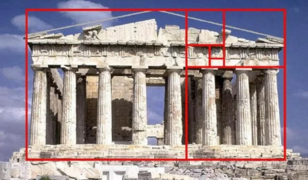

Responder a este comentário
O mito da proporção áurea
por Giba Assis Brasil em 30 de junho de 2014(mensagem para Jorge Furtado 30/06/2014)
Sim, os gregos (Eudoxus, Euclides) conheciam o número phi (1,618...) e descreveram algumas de suas extraordinárias propriedades matemáticas no século IV a.C., mas o chamavam simplesmente de "razão extrema e média". Nada de áureo, muito menos divino. A relação entre matemática e estética (e religião, e ocultismo) obviamente não é grega. Os deuses gregos eram humanos demais pra isso.
O termo "proporção divina" só foi criado na Renascença - mais precisamente por Luca Pacioli, monge franciscano considerado "o pai da contabilidade", em um livro cujo título era justamente "De divina proportioni", publicado em 1509. Já "proporção áurea" (Goldener Schnitt) não é uma expressão renascentista, e sim romântica: só foi surgir em 1835, num livro do matemático alemão Martin Ohm.
Olha a ilustração do Partenon "inscrito" no tal retângulo áureo (tirado de uma das muitas fontes da internet que "explicam" a proporção áurea) e me responde: por que o retângulo vermelho vai da base do quarto degrau até a projeção imaginária de onde teria sido o alto do frontão? Por que ele não começa na base das colunas? Tem certeza que o frontão ia exatamente até aquele ponto? Por que a linha é tão grossa?

Seja como for, o ilustrador errou feio: mede o retângulo vermelho por fora e tu vai ver que ele tem 507 x 296 pixels - proporção de 1,71. Por dentro, ele tem 501 x 289 pixels - proporção de 1,73. Bem longe dos 1,618 de Eudoxus e Euclides.
Seria fácil distorcer a imagem um pouquinho no photoshop, ou começar a contar do oitavo degrau, ou supor que o frontão era ainda um pouco maior, e chegar a 1,618 exatos. Por que não fizeram isso? Minha suposição: quem faz esse tipo de medição não está nem um pouco preocupado com matemática ou com estética. O objetivo é religioso (ou ocultista, que é a mesma coisa de cabeça pra baixo).
E, por favor, o que são aquelas linhas no rosto do Tom Cruise e da Sophia Loren? Alguém entende onde é que tá a proporção áurea ali? Que proporção tem que dar 1,618? Ou melhor, que a gente tem que acreditar que dá 1,618?
Quer dizer que a Sophia Loren é linda porque a distância do olho (aberto ou fechado?) à boca (aberta ou fechada?) dividida pela distância do nariz à sobrancelha dá exatamente 1,618? É isso mesmo? Os gregos achavam isso? Da Vinci acreditava nisso? As proporções do rosto da Vênus de Botticelli são matematicamente as mesmas da Thais Araújo, caso contrário uma das duas seria feia? A regra vale também pro Tom Cruise? Quer dizer que, matematicamente, beleza masculina e feminina, branca e preta, é a mesma coisa? Uma criança bonita também tem a mesma proporção? Uma pessoa bela que envelhece só deixa de ser bela se as dimensões do rosto forem alteradas com o tempo, ou vice-versa? Um rosto "não bonito" vai ter necessariamente uma proporção diferente? Qual? Quão distante deve estar do 1,618 pra que uma pessoa seja considerada definitivamente feia?
Sinceramente, é uma noção tão sem-noção que é até difícil de contestar.
Fico com Umberto Eco e Edmund Burke:
***
"Parece que em todos os séculos falou-se da Beleza da proporção, mas que, segundo as épocas, apesar dos princípios aritméticos e geométricos declarados, o sentido dessa proporção foi mudando. Afirmar que deve haver uma justa relação entre o comprimento dos dedos e a mão, e entre ela e o resto do corpo, é uma coisa; estabelecer qual seria a relação justa era matéria de gosto que podia mudar ao longo dos séculos. (...) Os construtores das catedrais seguiam um próprio critério proporcional diferente daquele de Palladio. E ainda assim muitos estudiosos contemporâneos tentaram demonstrar como os princípios de uma proporção ideal, inclusive a realização da seção áurea, podem ser encontrados em obras de todos os séculos, mesmo quando os artistas não conheciam as regras matemáticas correspondentes. Quando se entende a proporção como regra rigorosa, então se percebe que ela não existe na natureza, e pode-se chegar às argumentações setecentistas de Burke, que se posiciona contra a proporção como critério de Beleza."
(Umberto Eco, "História da Beleza", pp. 94-95)
"Quanto a mim, muitas vezes examinei várias dessas proporções e achei-as quase semelhantes, ou totalmente semelhantes àquelas de muitos sujeitos que não somente eram diferentes entre sim, mas alguns sendo belíssimos e outros muitíssimo distantes da Beleza. (...) Sim, estas proporções podem ser encontradas nos corpos graciosos, mas também nos feios, como a experiência pode a todos demonstrar; aliás, eu duvidaria se em alguns dos mais belos não seriam até menos perfeitas."
(Edmund Burke, "Pesquisa filosófica sobre a origem das ideias do sublime e do belo, III, 4, 1756; citado em "História da Beleza", Umberto Eco, p. 97)
***
Mas tem outras fontes possíveis.
George Markowsky é doutor em matemática pela Universidade do Maine. Em 1992 ele escreveu o artigo "Misconceptions about the golden ratio", listando uma série de equívocos sobre o assunto - inclusive a lenda do Partenon. O texto pode ser baixado aqui.
Mario Livio, astrofísico romeno que hoje vive em Baltimore, ganhou o "Pitagoras Prize" em 2002 pelo livro "The Golden Ratio: The Story of PHI, the World's Most Astonishing Number", em que ele tenta separar o que é real do que é mito na história do phi. O livro vendeu muito, mas parece que a maioria das pessoas só leu a orelha. Eu não li, mas tem na Amazon por 23 dólares, e uma versão pra Kindle por 10 dólares.
Eu cheguei até esses dois através de um matemático inglês, Keith Devlin, que hoje vive em Stanford. Em 2007 ele escreveu o artigo "The myth that will not go away", que pode ser lido aqui.
***
Mas é claro que, procurando na internet, é fácil encontrar milhares de textos que seguem o mito: "O número de ouro é a beleza perfeita que Deus usou ao construir o mundo." Um título particularmente me chamou atenção: "Catedral de Chartres: a geometria sagrada do cosmos". Fui atrás e descobri que esta fonte, além de certamente "provar" que Chartres foi construída na proporção áurea, também "demonstra" o seguinte:
"Nela [na Catedral de Chartres] também o tempo é diferente: em seu interior, a cada uma hora, o tempo passa um segundo a menos que em seu exterior. Lá, ocorre uma curvatura do espaço-tempo, pois a gravidade é mais alta que em outros lugares, em decorrência do gigantesco campo Merkabah em rotação e das forças magnéticas telúricas superiores."
Pra ver com quem é que nós estamos nos metendo ao discutir esse assunto.